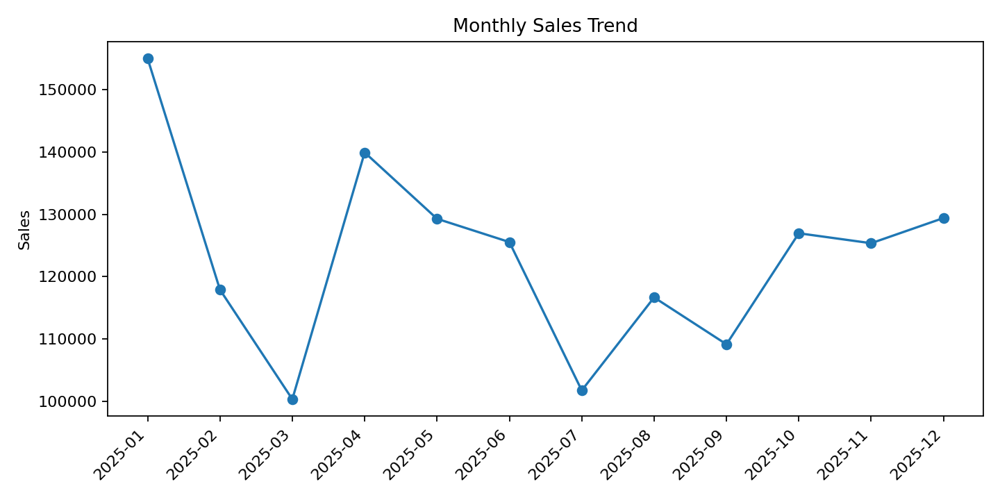

Business Sales Performance Analytics
Future Interns – Data Science & Analytics | Task 1
Total Sales
₹1,477,444
Total Profit
₹238,907
Orders
2,500
Average Order Value
₹590.98
Monthly Sales

Insights
- Technology is the leading revenue category.
- North is the strongest region.
- Laptop Pro is the top product by sales.
- Monthly variation can guide inventory and campaign planning.
- Profitability should be reviewed alongside sales and discounting.
Recommendations
- Protect inventory availability for top-selling products.
- Replicate successful regional strategies.
- Review high-discount transactions for margin impact.
- Use demand peaks for promotion and inventory planning.